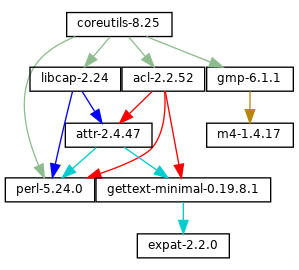
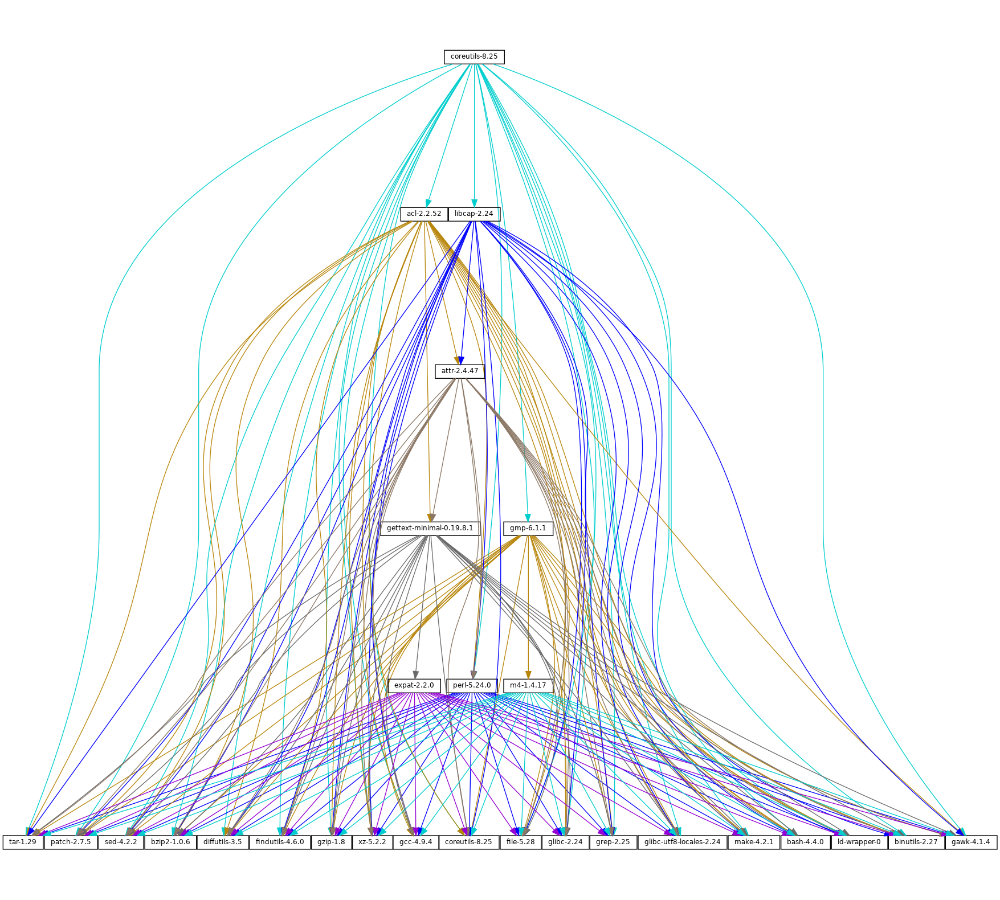

Next: Invoking guix publish, Previous: Invoking guix size, Up: Utilities [Contents][Index]
guix graphPackages and their dependencies form a graph, specifically a
directed acyclic graph (DAG). It can quickly become difficult to have a
mental model of the package DAG, so the guix graph command
provides a visual representation of the DAG. By default,
guix graph emits a DAG representation in the input format of
Graphviz, so its output can be passed
directly to the dot command of Graphviz. It can also emit an
HTML page with embedded JavaScript code to display a “chord diagram”
in a Web browser, using the d3.js library, or
emit Cypher queries to construct a graph in a graph database supporting
the openCypher query language. With
--path, it simply displays the shortest path between two
packages. The general syntax is:
guix graph options package…
For example, the following command generates a PDF file representing the package DAG for the GNU Core Utilities, showing its build-time dependencies:
guix graph coreutils | dot -Tpdf > dag.pdf
The output looks like this:
Nice little graph, no?
You may find it more pleasant to navigate the graph interactively with
xdot (from the xdot package):
guix graph coreutils | xdot -
But there is more than one graph! The one above is concise: it is the
graph of package objects, omitting implicit inputs such as GCC, libc,
grep, etc. It is often useful to have such a concise graph, but
sometimes one may want to see more details. guix graph supports
several types of graphs, allowing you to choose the level of detail:
packageThis is the default type used in the example above. It shows the DAG of package objects, excluding implicit dependencies. It is concise, but filters out many details.
reverse-packageThis shows the reverse DAG of packages. For example:
guix graph --type=reverse-package ocaml
... yields the graph of packages that explicitly depend on OCaml (if
you are also interested in cases where OCaml is an implicit dependency, see
reverse-bag below).
Note that for core packages this can yield huge graphs. If all you want
is to know the number of packages that depend on a given package, use
guix refresh --list-dependent (see --list-dependent).
bag-emergedThis is the package DAG, including implicit inputs.
For instance, the following command:
guix graph --type=bag-emerged coreutils
... yields this bigger graph:
At the bottom of the graph, we see all the implicit inputs of
gnu-build-system (see gnu-build-system).
Now, note that the dependencies of these implicit inputs—that is, the bootstrap dependencies (see Bootstrapping)—are not shown here, for conciseness.
bagSimilar to bag-emerged, but this time including all the bootstrap
dependencies.
bag-with-originsSimilar to bag, but also showing origins and their dependencies.
reverse-bagThis shows the reverse DAG of packages. Unlike reverse-package,
it also takes implicit dependencies into account. For example:
guix graph -t reverse-bag dune
... yields the graph of all packages that depend on Dune, directly or
indirectly. Since Dune is an implicit dependency of many packages
via dune-build-system, this shows a large number of packages,
whereas reverse-package would show very few if any.
derivationThis is the most detailed representation: It shows the DAG of derivations (see Derivations) and plain store items. Compared to the above representation, many additional nodes are visible, including build scripts, patches, Guile modules, etc.
For this type of graph, it is also possible to pass a .drv file name instead of a package name, as in:
guix graph -t derivation $(guix system build -d my-config.scm)
moduleThis is the graph of package modules (see Package Modules).
For example, the following command shows the graph for the package
module that defines the guile package:
guix graph -t module guile | xdot -
All the types above correspond to build-time dependencies. The following graph type represents the run-time dependencies:
referencesThis is the graph of references of a package output, as returned
by guix gc --references (see Invoking guix gc).
If the given package output is not available in the store, guix
graph attempts to obtain dependency information from substitutes.
Here you can also pass a store file name instead of a package name. For example, the command below produces the reference graph of your profile (which can be big!):
guix graph -t references $(readlink -f ~/.guix-profile)
referrersThis is the graph of the referrers of a store item, as returned by
guix gc --referrers (see Invoking guix gc).
This relies exclusively on local information from your store. For
instance, let us suppose that the current Inkscape is available in 10
profiles on your machine; guix graph -t referrers inkscape
will show a graph rooted at Inkscape and with those 10 profiles linked
to it.
It can help determine what is preventing a store item from being garbage collected.
Often, the graph of the package you are interested in does not fit on
your screen, and anyway all you want to know is why that package
actually depends on some seemingly unrelated package. The
--path option instructs guix graph to display the
shortest path between two packages (or derivations, or store items,
etc.):
$ guix graph --path emacs libunistring emacs@26.3 mailutils@3.9 libunistring@0.9.10 $ guix graph --path -t derivation emacs libunistring /gnu/store/…-emacs-26.3.drv /gnu/store/…-mailutils-3.9.drv /gnu/store/…-libunistring-0.9.10.drv $ guix graph --path -t references emacs libunistring /gnu/store/…-emacs-26.3 /gnu/store/…-libidn2-2.2.0 /gnu/store/…-libunistring-0.9.10
Sometimes you still want to visualize the graph but would like to trim
it so it can actually be displayed. One way to do it is via the
--max-depth (or -M) option, which lets you specify the
maximum depth of the graph. In the example below, we visualize only
libreoffice and the nodes whose distance to libreoffice is
at most 2:
guix graph -M 2 libreoffice | xdot -f fdp -
Mind you, that’s still a big ball of spaghetti, but at least
dot can render it quickly and it can be browsed somewhat.
The available options are the following:
Produce a graph output of type, where type must be one of the values listed above.
List the supported graph types.
Produce a graph using the selected backend.
List the supported graph backends.
Currently, the available backends are Graphviz and d3.js.
Display the shortest path between two nodes of the type specified by
--type. The example below shows the shortest path between
libreoffice and llvm according to the references of
libreoffice:
$ guix graph --path -t references libreoffice llvm /gnu/store/…-libreoffice-6.4.2.2 /gnu/store/…-libepoxy-1.5.4 /gnu/store/…-mesa-19.3.4 /gnu/store/…-llvm-9.0.1
Consider the package expr evaluates to.
This is useful to precisely refer to a package, as in this example:
guix graph -e '(@@ (gnu packages commencement) gnu-make-final)'
Display the graph for system—e.g., i686-linux.
The package dependency graph is largely architecture-independent, but there are some architecture-dependent bits that this option allows you to visualize.
Add directory to the front of the package module search path (see Package Modules).
This allows users to define their own packages and make them visible to the command-line tools.
On top of that, guix graph supports all the usual package
transformation options (see Package Transformation Options). This
makes it easy to view the effect of a graph-rewriting transformation
such as --with-input. For example, the command below outputs
the graph of git once openssl has been replaced by
libressl everywhere in the graph:
guix graph git --with-input=openssl=libressl
So many possibilities, so much fun!
Next: Invoking guix publish, Previous: Invoking guix size, Up: Utilities [Contents][Index]